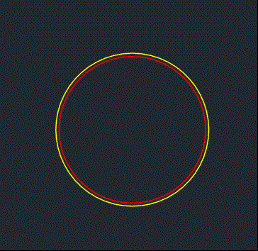

GripOverrule allows redefining the grips of an object and controlling the graphical changes when grips are dragged.
Note: This article extends the Display Overrule (DrawableOverrule). It is recommended to read Display Overrule first.
Creating a Custom GripOverrule
Create a new class file named MyGripOverrule in your project. Modify the code to make MyGripOverrule inherit from the GripOverrule class, and override the two virtual methods from the parent class: GetGripPoints and MoveGripPoints.
class MyGripOverrule : GripOverrule
{
public override void GetGripPoints(Entity entity, GripDataCollection grips,
double curViewUnitSize, int gripSize, Vector3d curViewDir, GetGripPointsFlags bitFlags)
{
...
}
public override void MoveGripPointsAt(Entity entity, GripDataCollection grips,
Vector3d offset, MoveGripPointsFlags bitFlags)
{
...
}
}
GetGripPoints
| Parameters | Description |
|---|---|
| entity | The original entity object to which the overrule is applied |
| grips | Grip data collection. The method receives the entity's default grip collection. |
| curViewUnitSize | Current view unit size in pixels |
| gripSize | Grip size in pixels |
| curViewDir | Current view direction |
| bitFlags | Flags for grip acquisition |
MoveGripPointsAt
| Parameters | Description |
|---|---|
| entity | The original entity object to which the overrule is applied |
| grips | Grip data collection. The method receives the entity's default grip collection. |
| offset | Grip offset vector |
| bigFlags | Flags for grip movement |
Creating Custom GripData
GripData can store custom grip information, such as grip movement methods and grip styles.
public class MyGrip : GripData
{
// Define the transformation method for grip coordinates
public void Move(Vector3d vec)
{
GripPoint = GripPoint + vec;
}
}
Implementing Grip Overrule
Creating Custom Grips
The GetGripPoints function retrieves the existing grip data collection on the entity. By adding or removing grip data objects in the collection, you can control the final displayed grips. In this example, we add a grip to control the spacing between inner and outer circles.
public override void GetGripPoints(Entity entity, GripDataCollection grips,
double curViewUnitSize, int gripSize, Vector3d curViewDir, GetGripPointsFlags bitFlags)
{
// Check if it is a circle
if (entity is Circle myCircle)
{
// Get the circle's extended data
ResultBuffer rb = entity.GetXDataForApplication(Commands.m_xdata);
int spacing = (int)rb.AsArray()[1].Value;
// Set the custom grip position at 45° on the outer circle
Point3d pt = myCircle.Center + new Vector3d(myCircle.Radius + spacing / 2, 0, 0);
pt = pt.RotateBy(System.Math.PI / 4, Vector3d.ZAxis, myCircle.Center);
// Create custom grip data
MyGrip grip = new MyGrip();
grip.GripPoint = pt;
// Add to the grip data collection
grips.Add(grip);
}
base.GetGripPoints(entity, grips, curViewUnitSize, gripSize, curViewDir, bitFlags);
}
Custom Grip Movement Handling
The MoveGripPointsAt function defines how to handle offset data after each grip is dragged. This example restricts the grip offset range to prevent negative radii and records the offset between inner and outer circles into XData for redrawing.
public override void MoveGripPointsAt(Entity entity, GripDataCollection grips,
Vector3d offset, MoveGripPointsFlags bitFlags)
{
if (entity.Id.IsValid && entity is Circle myCircle)
{
foreach (GripData g in grips)
{
// Find the custom grip data in the collection
if (g is MyGrip)
{
MyGrip grip = (MyGrip)g;
Vector3d dir = (grip.GripPoint - myCircle.Center).GetNormal();
double offsetDist = dir.DotProduct(offset);
double radius = myCircle.Radius;
double curOffset = (grip.GripPoint - myCircle.Center).Length - radius;
// Restrict offset to ensure spacing is greater than 0 and less than twice the radius
if (offsetDist >= 0)
{
if (offsetDist > (radius - curOffset))
{
offsetDist = radius - curOffset;
}
}
else
{
if (-offsetDist > curOffset)
{
offsetDist = -curOffset;
}
}
dir = dir * (((int)(offsetDist * 2)) / 2);
// Call the custom grip move function
grip.Move(dir);
// Write the offset inner and outer circle spacing back to XData
ResultBuffer rb = myCircle.GetXDataForApplication(Commands.m_xdata);
int spacing = (int)rb.AsArray()[1].Value;
spacing = spacing + (int)(offsetDist * 2);
ResultBuffer newRb = new ResultBuffer(
new TypedValue(System.Convert.ToInt32(DxfCode.ExtendedDataRegAppName), Commands.m_xdata),
new TypedValue(System.Convert.ToInt32(DxfCode.ExtendedDataInteger32), spacing));
myCircle.XData = newRb;
break;
}
}
}
// Remove custom grip data objects from the collection, then call the default MoveGripPointsAt method for remaining grips
for (int i = grips.Count - 1; i >= 0; --i)
{
if (grips[i] is MyGrip)
grips.Remove(grips[i]);
}
if (grips.Count > 0)
{
base.MoveGripPointsAt(entity, grips, offset, bitFlags);
}
}
Adding and Removing Grip Rules
Use the AddOverrule method of Overrule to apply redraw rules to specific entity types. Use SetXDataFilter to add a filter, ensuring the rule is only executed for entities with corresponding XData.
Adding Rules
public const string m_xdata = "MY_XDATA";
static MyEntOverrule drawableOverride;
static MyGripOverrule gripOverride;
[CommandMethod("AddOverrule")]
static public void AddDrawableOverrule()
{
Editor ed = Application.DocumentManager.MdiActiveDocument.Editor;
// ...
// drawableOverride
// ...
if (gripOverride == null)
{
gripOverride = new MyGripOverrule();
Overrule.AddOverrule(RXObject.GetClass(typeof(Circle)), gripOverride, false);
gripOverride.SetXDataFilter(m_xdata);
}
Overrule.Overruling = true;
ed.Regen();
ed.WriteMessage("\nOverrule Added!");
}
Removing Rules
[CommandMethod("RemoveOverrule")]
static public void RemoveDrawableOverrule()
{
Editor ed = Application.DocumentManager.MdiActiveDocument.Editor;
// ...
// drawableOverride
// ...
if (gripOverride != null)
{
Overrule.RemoveOverrule(RXObject.GetClass(typeof(Circle)), gripOverride);
gripOverride = null;
}
Overrule.Overruling = false;
ed.Regen();
ed.WriteMessage("\nOverrule Removed!");
}
Implementation Effect

Implementation Code
Refer to the .Net sample project code: ZwDotNetGuide/OverruleSample/MyGripOverrule